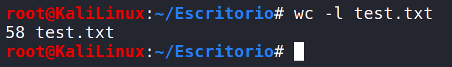
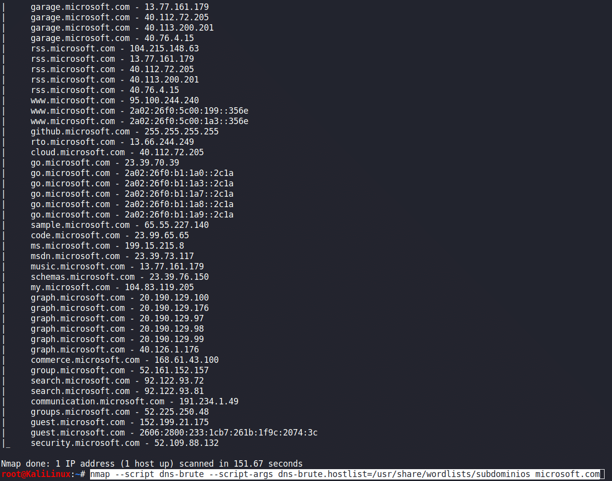
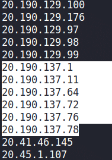
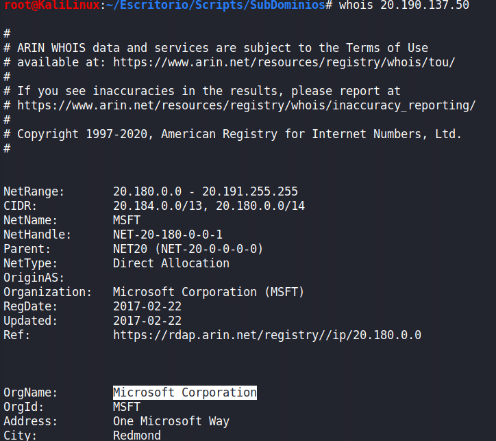
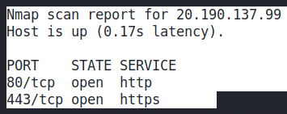
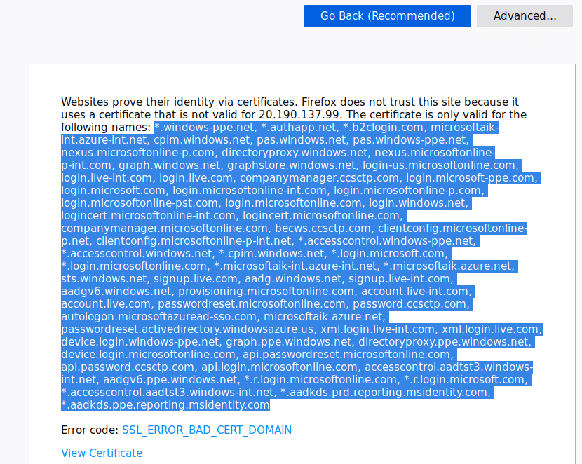
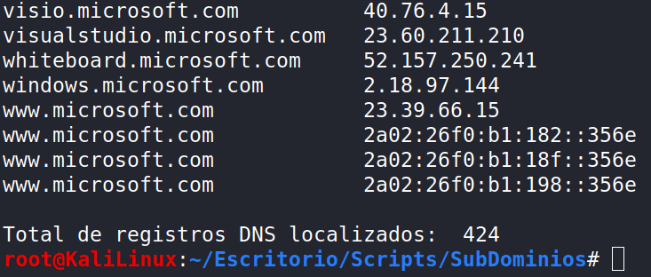

Cuando hablamos de NMAP lo primero que se nos viene a la cabeza es análisis de puertos. Si bien es cierto que NMAP es la herramienta más potente y efectiva para esta tarea, NMAP nos brinda un conjunto de oportunidades ilimitadas que hace de esta herramienta, posiblemente junto con MetaSploit, el mejor framework de aplicaciones para los hackers y pentesters.
Adicionalmente a su principal funcionalidad para análisis de puertos y servicios, contamos con un conjunto de cientos de scripts creados por una gran comunidad programados en LUA. En este artículo vamos a ver cómo sacar un alto rendimiento de estos scripts de NMAP (NSE), para adaptarlo a nuestras necesidades y no limitarnos a la visión de cada programador de los scripts.
Para este artículo usaremos un script básico pero muy interesante, dns-brute, que nos va a permitir realizar una función fundamental en nuestros pentesting: obtener los subdominios de un dominio. Esto es un básico de cualquier caja negra, ya que en muchas ocasiones lograremos acceder mediante fallos o vulnerabilidades de uno de estos subdominios que suelen estar menos atendidos.
Lanzando dns-brute por defecto
El comando que usaremos es el siguiente:
nmap --script dns-brute microsoft.com
El resultado obtenido lo pasamos a un archivo de texto para ver los registros detectados. Para ver el número de registros DNS, eliminamos las cabeceras y dejamos un registro por línea para ver con el comando wc el total de registros detectados.

Un total de 58 registros, lo que no está mal, pero es muy limitado para una empresa de la envergadura de Microsoft, por lo que sabemos que el diccionario usado por este script por defecto está muy limitado. Es por esto que es preciso mejorarlo o, en este caso, hacer uso de sus propiedades.
Usando un diccionario propio
Ahora vamos a lanzar un diccionario propio creado para la ocasión; esto es lo que marcará la diferencia en los resultados. He creado un diccionario de subdominios habituales llamado subdominios que coloco en la ruta de diccionarios por defecto de Kali Linux. Para ello me valgo de los argumentos de NMAP y lanzo el siguiente comando:
nmap --script dns-brute --script-args dns-brute.hostlist=/usr/share/wordlists/subdominios microsoft.com
El resultado por lo general es rápido. Todo dependerá del número de palabras en el diccionario y la conexión, pero con una conexión 3G y un diccionario de cerca de 2500 palabras, el tiempo ha sido de 1 minuto aproximadamente. Afinar con mejores resultados dependerá de que vayamos mejorando y ampliando nuestro diccionario en base a la experiencia.

Script de bash para depurar resultados
El resultado parece mucho más amplio que el obtenido por el script por defecto, pero el orden del resultado complica el análisis para continuar trabajando. La forma de solucionarlo es crear un propio script de bash que depure el resultado, lo ordene en base a nuestras necesidades e informe del número de registros detectados:

Damos permisos de ejecución al script de bash y lo lanzamos para comparar resultados con el mismo dominio:

Tras poco más de un minuto de espera, nos encontramos con un resultado muy superior a la inicial, concretamente un total de 415 registros, 9 más que antes gracias a la propia información proporcionada por el cliente. Este resultado es fundamental para evitar dejar subdominios fuera de la auditoría.

Extrayendo IPs únicas
Otra de las grandes ventajas es que, al crear un archivo en local con los resultados, podremos tratarlo a nuestro gusto. Por ejemplo, vamos a mostrar tan solo las direcciones IP ordenadas y sin repetirse:
cat microsoft.com.txt | sed 's/\s+/_/g' | cut -d '_' -f 2 | sort | uniq
No solo obtenemos mayor número de registros DNS, sino que además vamos a encontrar pools de IPs sobre los que poder trabajar posteriormente. Para verificar que pertenecen al cliente, usamos una IP del rango y hacemos un whois:

Con estas nuevas direcciones IP, podremos seguir usando NMAP con los puertos habituales para descubrir nuevos registros DNS:
nmap -p80,443 20.190.137.0/24
Si accedemos a la web por el puerto SSL, veremos que logramos obtener multitud de nuevos dominios del cliente para continuar con nuestro trabajo. Este es un fallo habitual de las empresas, donde por ahorrar dinero usan un certificado digital para multitud de dominios.

Conclusión
El objetivo de este artículo no es llegar hasta el final de las posibilidades de este script, ni hacer un footprinting completo de ninguna empresa. Es dar una visión de las capacidades de adaptación que cada script de NMAP o NSE proporciona al auditor para facilitar su trabajo. Este mismo ejemplo, siendo muy simple, se puede replicar en decenas de scripts de NMAP que se valen de diccionarios, como puedan ser los de enumeración de usuarios, fuzzers, etc.
— Javier Blanco —